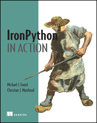

While twittering (or tweeting) about an IronPython presentation I was doing, @voidspace messaged me asking if I might mention his book. I’d contacted Michael Foord a while back about some code I was playing around with. I also knew of him from his blog, his prolific contribution to IronPythonURLs and as the co-author of the new book IronPython in Action. He’s so all over everything IronPython he even reads this blog.
Mainly because I was too cheap to buy myself a copy it, I hadn’t read his book. I was wrapped when he offered to get me a copy if I’d review it on this blog. I wanted to read it as I was learning IronPython and I knew it would be a good book, I’d read chapters 1 and 7 which are online. I happily recommended it in my presentation, here’s what I thought about the book.
IronPython in Action is a fantastic resource for anyone learning IronPython and for anyone wondering what this dynamic language IronPython is all about and whether they should learn it. It feels nicely balanced for both .NET users looking to learn about IronPython, and for Python users looking to learn about IronPython on .NET.
I prefer software books that have plenty of discussion and can be read from start to finish otherwise I end up skipping through chapters I never go back too. I found this book well written and fun to read with interesting insight all the way through. There is enough about the python language and .NET to get you through the book, and rather than being a reference book it instead provides information on how to learn more.
The book is divided into four main sections. The first section Getting Started with Iron Python contains a good introduction and history of IronPython on the .NET Framework.
The Core Development Techniques section is a walkthrough of building a simple Windows Forms application. I think this section is fantastic as the text places high value on Agile Development philosophy, using a Model-View-Controller pattern and Test Driven Development. I think these are exciting ways to develop software on the .NET framework. There is also a really good section discussing the difficulties, pitfalls and work-arounds using IronPython and dynamic programming languages generally on the .NET framework.
The third section IronPython and Advanced .NET contains chapters about using the major pillars of the .NET framework with IronPython. It has chapters on WPF, Powershell, ASP.NET, Databases, Webservices and Silverlight. It really is amazing how much of the framework can be used in IronPython.
The final section Reaching Out with IronPython has fantastic chapters on extending IronPython with C#/VB and embedding an IronPython Engine in C#/VB applications to provide extensibility.
I highly recommend this book, I enjoyed reading it and learned a lot from it. If you’re looking for a little more insight, the forward by Jim Hugunin frames the language, the technology and author well.